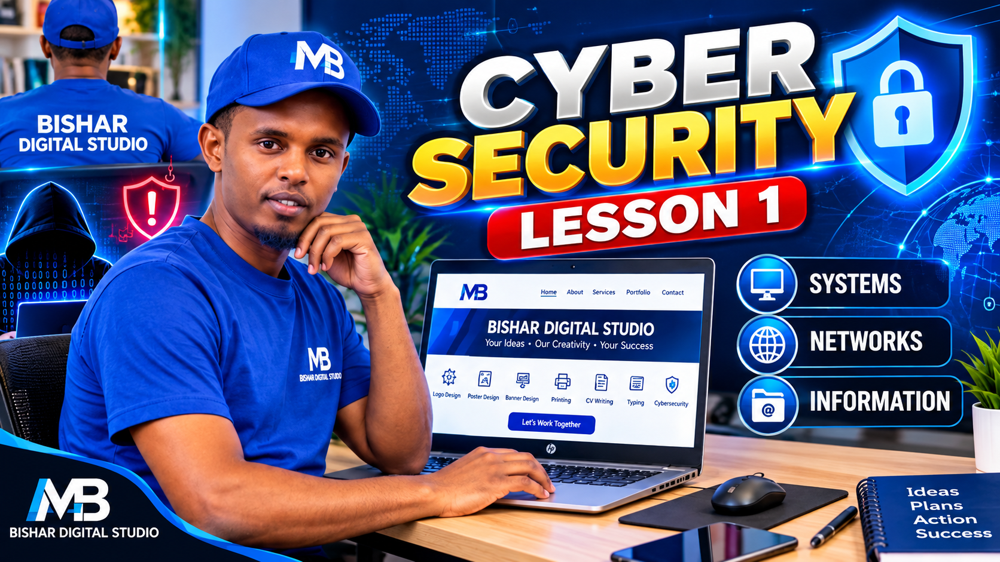

FREE LESSON 1
What Is Cybersecurity?
Casharka 1aad: Waa Maxay Amniga Dijitaalka?
Amniga Dijitaalka (Cybersecurity) waa habka lagu ilaaliyo kombiyuutarrada, taleefannada, shabakadaha, barnaamijyada iyo xogta si looga difaaco khataraha dijitaalka ah, xatooyada xogta iyo gelitaanka aan la oggolayn.
1. Why Is Cybersecurity Important?
Cybersecurity waxay naga caawisaa ilaalinta qalabkeenna, akoonnadayada iyo xogteenna gaarka ah. Waxay naga difaacdaa khiyaanooyinka internetka, barnaamijyada waxyeellada leh iyo gelitaanka aan fasaxa lahayn.
- Phishing: Khiyaano lagu doonayo in qof laga helo xog muhiim ah.
- Malware: Barnaamij waxyeello leh oo khatar gelin kara qalab ama xog.
- Unauthorized Access: Gelitaanka akoon ama nidaam iyadoo aan fasax la haysan.
2. What Does Cybersecurity Protect?
💻 Systems — Nidaamyada
Kombiyuutarrada, taleefannada iyo server-rada.
🌐 Networks — Shabakadaha
Shabakadaha isku xira qalabka si ay xog u wadaagaan.
🔐 Information — Xogta
Furayaasha sirta ah, xogta shakhsiga iyo diiwaannada ganacsiga.
3. The CIA Triad
🔒 Confidentiality — Sir-ilaalin
Xogta waxaa heli kara oo keliya dadka loo oggol yahay.
🛡️ Integrity — Saxnaanta Xogta
Xogtu waa inay ahaataa mid sax ah oo aan si aan la oggolayn loo beddelin.
⚡ Availability — Helitaanka
Xogta iyo adeegyada waa inay diyaar ahaadaan marka loo baahdo.
4. Mini Quiz
Haddii website bangi aanu shaqaynayn hal saac, qaybtee CIA Triad ah ayaa dhibaatadu taabanaysaa?
- A. Confidentiality
- B. Integrity
- C. Availability — Jawaabta saxda ah
5. Lesson Summary
Cybersecurity ma aha hacking oo keliya. Waa ilaalinta qalabka, shabakadaha iyo xogta iyadoo la adeegsanayo teknoolojiyad, habraacyo iyo taxaddar amni.
Watch the Video Lesson
Casharkan qoraal ahaan ayaad halkan uga akhrisan kartaa. Muuqaalka YouTube-ka waxaa lagu dari doonaa marka la daabaco.
Next lesson: Information Security and the CIA Triad.
← Back to Bishar Digital Studio
Subscribe to Bishar Digital Studio on YouTube for more lessons.